Images et médias selon Opquast V5
Images et médias selon Opquast V5
Slide 1 sur 15 - Images et médias
Slide 1 - Images et médias
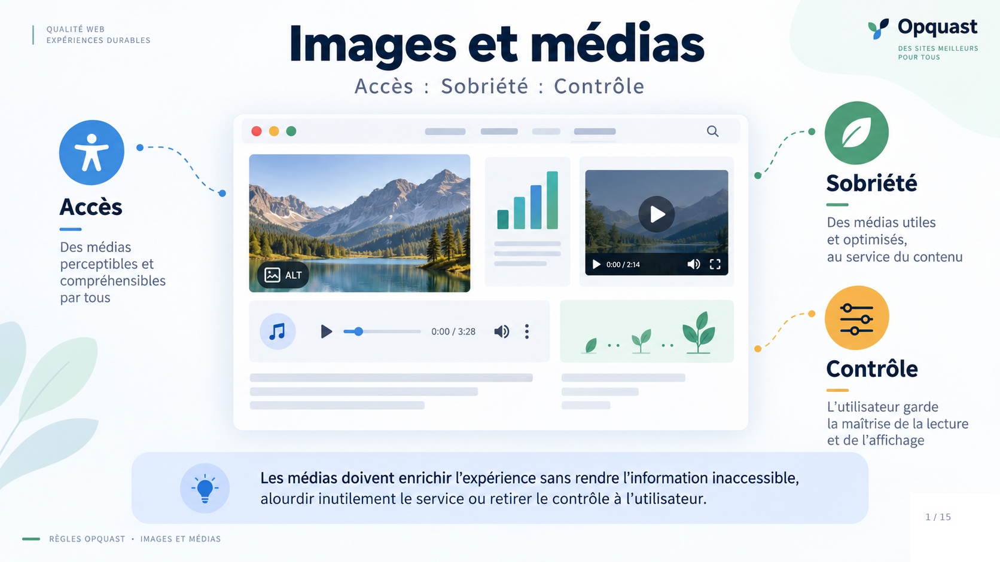
Lecture du visuel
Une interface réunit plusieurs médias : image, graphique, vidéo, audio et animation. Trois notions organisent la rubrique : Accès, Sobriété, Contrôle.
Les trois axes
- Accès à l'information
- Sobriété des ressources
- Contrôle utilisateur
Idée directrice
Les médias doivent enrichir l'expérience sans créer de difficultés pour l'utilisateur.
Message à retenir
Un média doit rester au service de l'utilisateur.
Une image, une vidéo ou un son peut enrichir un service. Mais un média peut aussi faire perdre une information, consommer inutilement des ressources ou s'imposer à l'utilisateur.
Impact utilisateur
L'utilisateur peut perdre une information, télécharger inutilement des données ou perdre la maîtrise de sa consultation.
Ce que garantissent les règles
Elles visent à préserver l'accès à l'information, la sobriété et le contrôle utilisateur.
Mémo
Accéder, économiser, garder la main.
Slide 2 - Commencer par le problème utilisateur
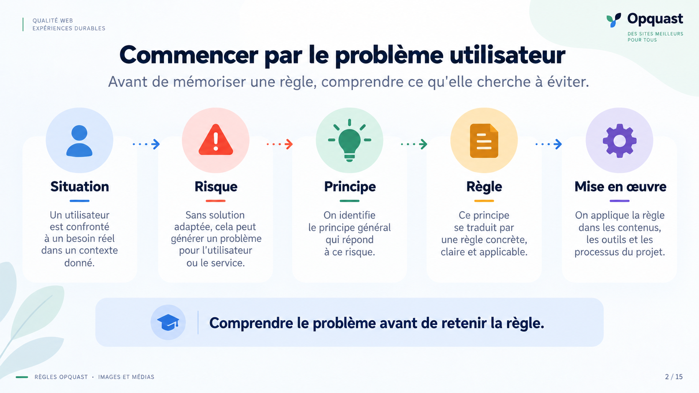
Lecture du visuel
Le schéma suit une progression : Situation → Risque → Principe → Règle → Mise en œuvre.
Idée directrice
Une règle se comprend mieux lorsqu'on sait d'abord quel problème utilisateur elle cherche à prévenir.
Message à retenir
Comprendre le problème avant de mémoriser la règle.
Je vous propose de ne pas commencer par le numéro de la règle. Commençons par l'utilisateur : que lui arrive-t-il si la règle n'est pas appliquée ? Ensuite seulement, demandons-nous ce que la règle cherche à préserver.
Impact utilisateur
Quel préjudice l'utilisateur peut-il subir ?
Ce que garantit la règle
Qu'est-ce que son application rend possible ou évite à l'utilisateur ?
Mémo
Préjudice → garantie → règle.
Slide 3 - Une image n’a pas toujours le même rôle
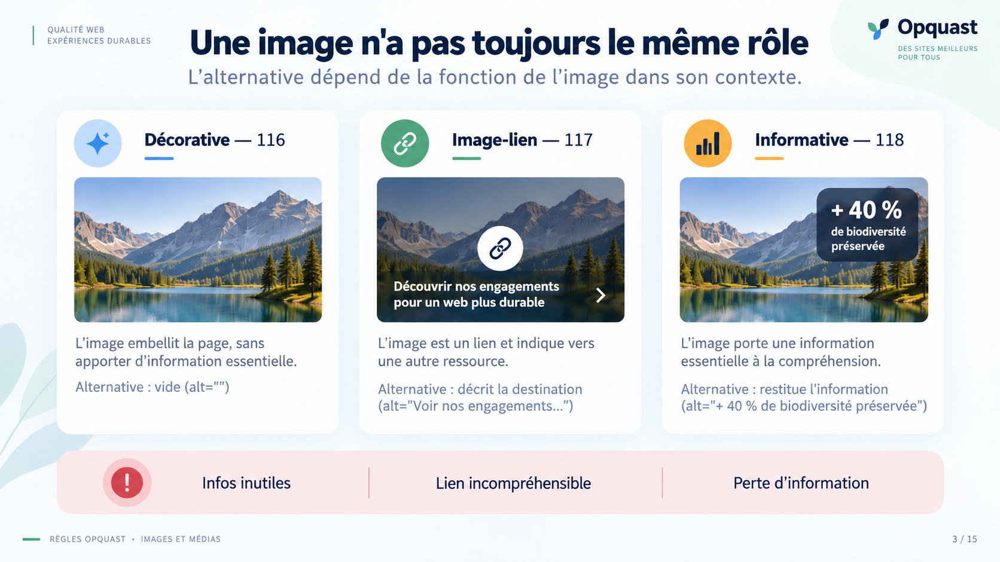
Lecture du visuel
La même image est présentée dans trois contextes : décorative, image-lien, informative.
Les règles
- 116 : image décorative
- 117 : image-lien
- 118 : image porteuse d'information
Idée directrice
L'alternative dépend de la fonction de l'image dans son contexte.
Message à retenir
On ne décrit pas seulement l'image, on comprend ce qu'elle fait.
Avant d'écrire une alternative, posez une question : quel rôle joue cette image ici ?
Si elle est décorative, la décrire ajoute du bruit. Si elle est le seul contenu d'un lien, l'utilisateur doit comprendre la cible ou le rôle du lien. Si elle porte une information, cette information ne doit pas disparaître avec l'image.
Impact utilisateur
L'utilisateur peut être parasité par une information inutile, ne pas comprendre un lien ou perdre une information nécessaire.
Ce que garantissent les règles
Elles garantissent une restitution adaptée au rôle réel de l'image.
Mémo
Décor : silence. Lien : fonction. Information : contenu.
Slide 4 - Que doit restituer l’alternative ?
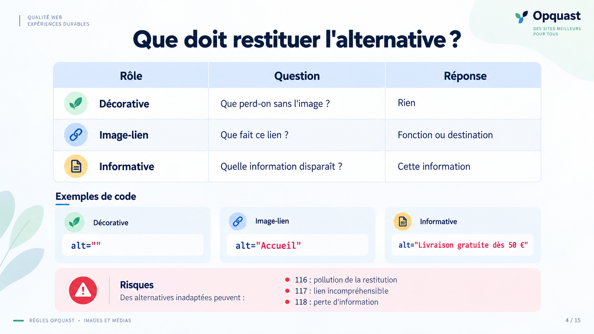
Lecture du visuel
Trois questions permettent de choisir l'alternative :
- Décorative : que perd-on sans l'image ? Rien
- Image-lien : que fait ce lien ? Fonction ou destination
- Informative : quelle information disparaît ? Cette information
Exemples
alt=""alt="Accueil"alt="Livraison gratuite dès 50 €"Idée directrice
L'alternative doit restituer ce qui est utile dans le contexte, sans ajouter d'information parasite.
Message à retenir
Restituer ce qui compte, rien de plus.
Voici un test simple : retirez mentalement l'image.
S'il ne manque rien, elle est décorative. Si l'action ou la destination du lien disparaît, l'alternative doit la restituer. Si une information disparaît, cette information doit se retrouver dans l'alternative.
Impact utilisateur
Une mauvaise alternative peut ajouter du bruit ou supprimer une information utile.
Ce que garantissent les règles
Elles garantissent que l'alternative restitue ce qui est nécessaire dans le contexte, sans information parasite.
Mémo
Enlevez l'image : qu'est-ce qui manque ?
Slide 5 - Quand une alternative courte ne suffit plus
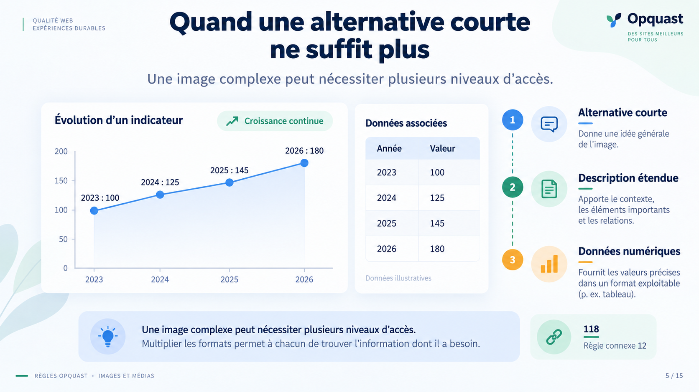
Lecture du visuel
Un graphique est accompagné de plusieurs niveaux d'accès :
- alternative courte ;
- description étendue ;
- données numériques.
Les règles
- 118 : image porteuse d'information
- règle connexe 12 : données numériques du graphique
Idée directrice
Une image complexe peut demander plus qu'une simple phrase alternative.
Message à retenir
L'utilisateur doit accéder aux données, pas seulement à leur dessin.
Un alt ne suffit pas toujours. Un graphique peut contenir trop d'informations pour être résumé correctement en quelques mots.
Dans ce cas, on complète avec une description étendue. Et lorsqu'il représente des données numériques, la règle 12 demande aussi de donner accès à ces données.
Impact utilisateur
L'utilisateur peut ne pas comprendre le graphique ou ne pas pouvoir accéder aux données qui le composent.
Ce que garantissent les règles
Elles garantissent l'accès au sens du graphique et à ses données numériques.
Mémo
Le graphique montre, les données donnent le détail.
Slide 6 - Petit à l’écran ne veut pas dire petit à télécharger
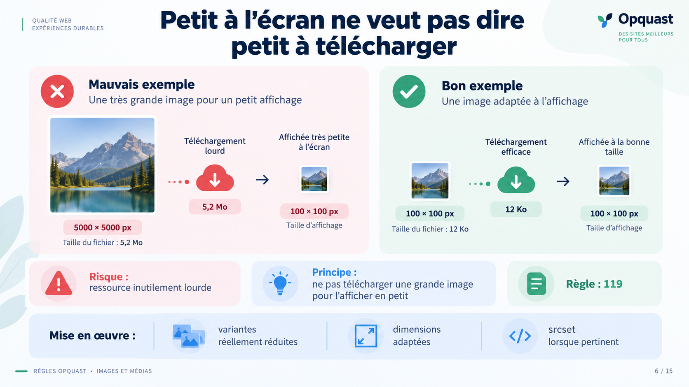
Lecture du visuel
Une image de 5000 × 5000 px est comparée à une vraie vignette affichée en 100 × 100 px.
La règle
119. Les vignettes et aperçus ne sont pas des images de taille supérieure redimensionnées côté client.
Idée directrice
La taille affichée doit correspondre à une ressource réellement adaptée.
Message à retenir
Une petite vignette ne doit pas cacher un gros téléchargement.
Une image de 5000 pixels affichée en 100 pixels est petite uniquement à l'écran. L'utilisateur télécharge toujours la grosse image.
La règle 119 cherche précisément à éviter ce gaspillage.
Impact utilisateur
L'utilisateur télécharge plus de données que nécessaire et l'affichage peut être ralenti.
Ce que garantit la règle
Elle garantit une ressource adaptée à l'usage et limite les données téléchargées inutilement.
Mémo
Petite à l'écran, petite à télécharger.
Slide 7 - Si l’objet intégré ne fonctionne pas, que reste-t-il ?
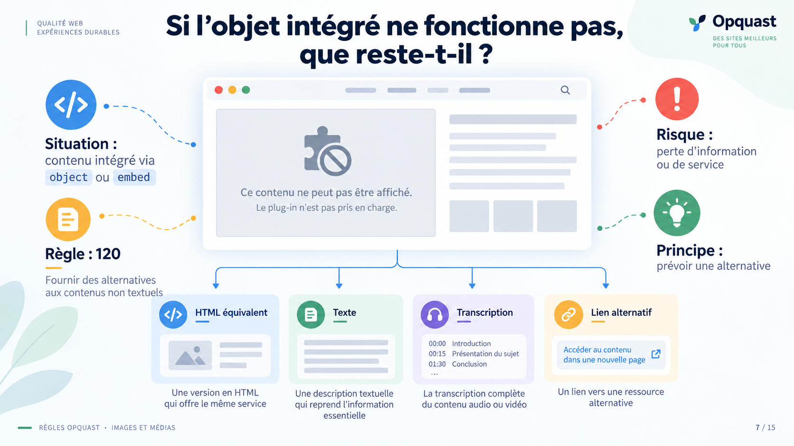
Lecture du visuel
Un contenu intégré via object ou embed est associé à une solution de remplacement.
La règle
120. Les objets inclus sont dotés d'une alternative textuelle appropriée.
Idée directrice
Le contenu ou le service ne doit pas disparaître lorsque l'objet inclus n'est pas disponible.
Message à retenir
Toujours prévoir ce qui reste si l'objet ne fonctionne pas.
Imaginez que l'objet intégré ne puisse pas être affiché. S'il ne reste rien, l'utilisateur perd l'information ou le service.
L'alternative peut être un contenu dans la page, un lien ou même une version équivalente du service.
Impact utilisateur
L'utilisateur peut perdre complètement l'accès à une information ou à une fonctionnalité.
Ce que garantit la règle
Elle garantit une voie alternative lorsque l'objet inclus n'est pas utilisable.
Mémo
L'objet peut disparaître, pas l'information.
Slide 8 - Plusieurs chemins vers le même contenu
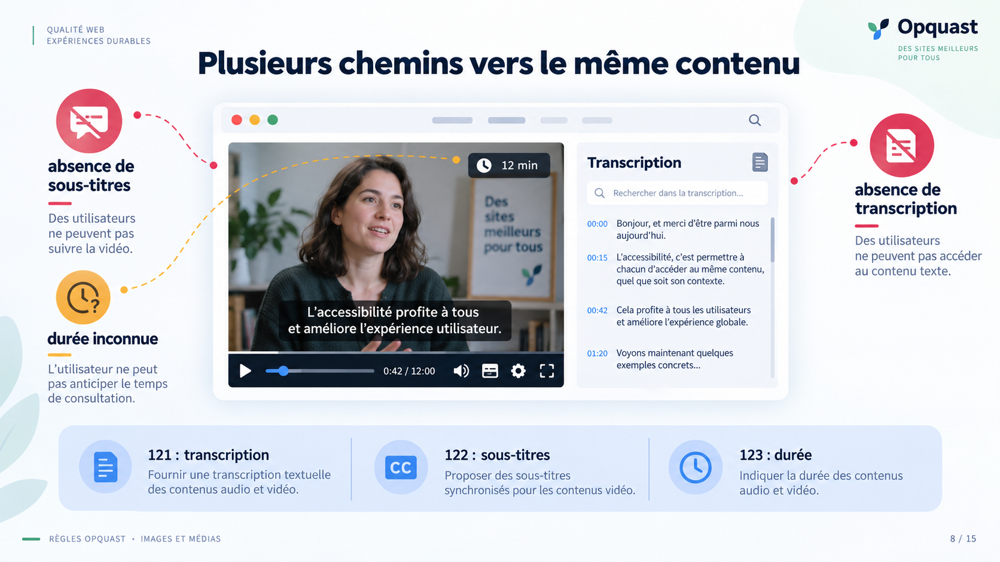
Lecture du visuel
Une interview vidéo est accompagnée de trois informations ou services : transcription, sous-titres, durée.
Les règles
- 121 : transcription textuelle
- 122 : sous-titres synchronisés
- 123 : durée du média
Idée directrice
Un même contenu doit pouvoir être compris et choisi dans plusieurs situations de consultation.
Message à retenir
Donner plusieurs chemins d'accès au contenu.
Ces trois règles répondent à trois besoins différents.
La transcription donne un accès textuel au contenu. Les sous-titres permettent de suivre la vidéo lorsque le son n'est pas accessible. La durée permet de décider si c'est le bon moment pour lancer ou télécharger le média.
Impact utilisateur
L'utilisateur peut perdre le contenu, ne pas pouvoir suivre la vidéo sans son ou s'engager dans un média sans connaître sa durée.
Ce que garantissent les règles
Elles garantissent un accès alternatif, un suivi synchronisé et un choix éclairé avant consultation.
Mémo
Lire, suivre, choisir.
Slide 9 - Transcription ≠ sous-titres
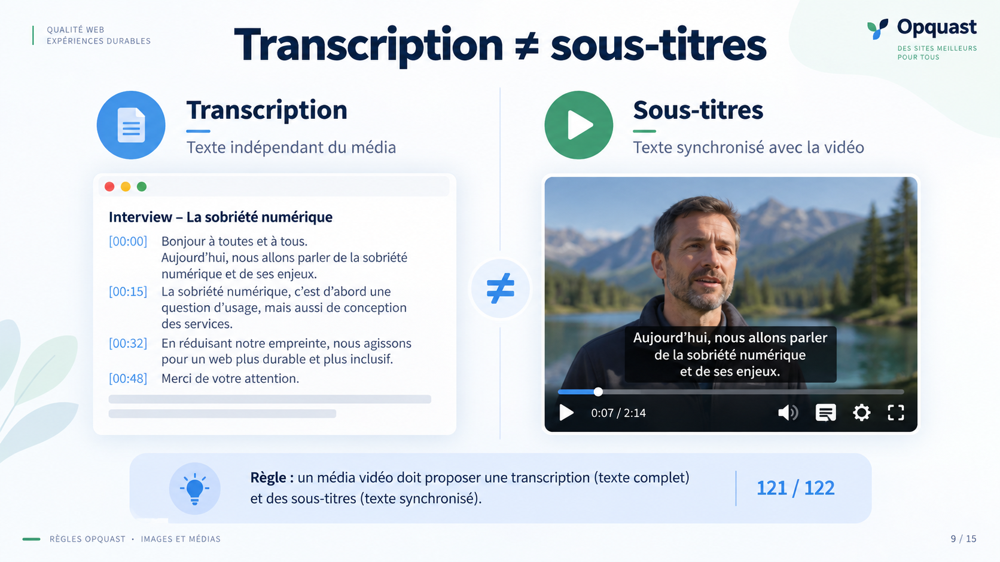
Lecture du visuel
Deux formes sont comparées :
- Transcription : texte indépendant du média
- Sous-titres : texte synchronisé avec la vidéo
Les règles
- 121 : transcription
- 122 : sous-titres synchronisés
Idée directrice
Transcription et sous-titres répondent à des usages différents et ne se confondent pas.
Message à retenir
Même contenu, deux modes d'accès différents.
Une transcription et des sous-titres ne sont pas deux noms pour la même chose.
La transcription peut être consultée indépendamment du média. Les sous-titres suivent la vidéo et donnent au bon moment au moins l'information portée par la parole.
Impact utilisateur
Sans transcription, l'utilisateur peut ne pas disposer d'une alternative textuelle autonome. Sans sous-titres, il peut ne pas pouvoir suivre confortablement la vidéo sans le son.
Ce que garantissent les règles
Elles garantissent deux accès complémentaires : autonome et synchronisé.
Mémo
Transcription : autonome. Sous-titres : synchronisés.
Slide 10 - C’est l’utilisateur qui décide
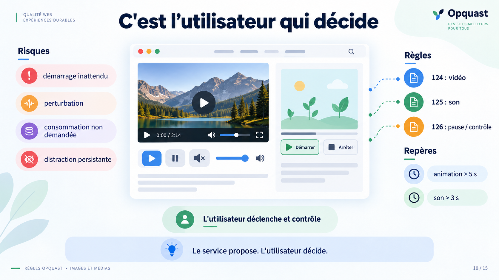
Lecture du visuel
Vidéo, son et animation sont associés à des commandes de lecture, pause, muet et volume.
Les règles
- 124 : vidéos déclenchées par l'utilisateur
- 125 : sons déclenchés par l'utilisateur
- 126 : animations, sons et clignotements pouvant être mis en pause
Idée directrice
Le service propose le média, mais l'utilisateur conserve la maîtrise de son déclenchement et de son interruption.
Message à retenir
Le service propose. L'utilisateur décide.
Il y a deux moments à distinguer.
Avant le média, c'est l'utilisateur qui décide de déclencher la vidéo ou le son. Pendant le média, il doit pouvoir reprendre la main et interrompre ce qui bouge, clignote ou produit du son.
Impact utilisateur
L'utilisateur peut être surpris, gêné, distrait ou se voir imposer une consommation de données qu'il n'a pas demandée.
Ce que garantissent les règles
Elles garantissent l'initiative du déclenchement et la possibilité d'interrompre le média.
Mémo
Avant, je déclenche. Pendant, je peux arrêter.
Slide 11 - Une animation ne doit jamais faire barrage
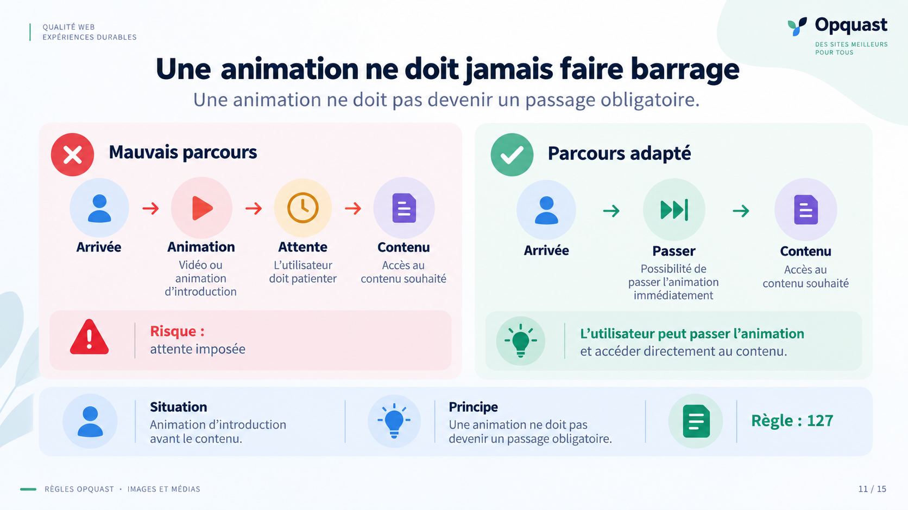
Lecture du visuel
Deux parcours sont comparés :
- arrivée → animation → attente → contenu ;
- arrivée → passer → contenu.
La règle
127. Le déroulement des animations ne bloque pas la navigation ou l'accès aux contenus.
Idée directrice
Une animation peut accompagner le parcours, mais ne doit pas devenir un passage obligatoire.
Message à retenir
Le contenu doit rester immédiatement accessible.
Une animation peut être proposée. Elle ne doit pas devenir un péage obligatoire avant le contenu.
Si elle précède la page, l'utilisateur doit pouvoir la passer sans attendre sa fin.
Impact utilisateur
L'utilisateur peut être retardé ou bloqué alors qu'il veut simplement accéder au contenu.
Ce que garantit la règle
Elle garantit un accès direct et immédiat au contenu.
Mémo
Proposer, jamais barrer.
Slide 12 - La thématique dépasse la rubrique
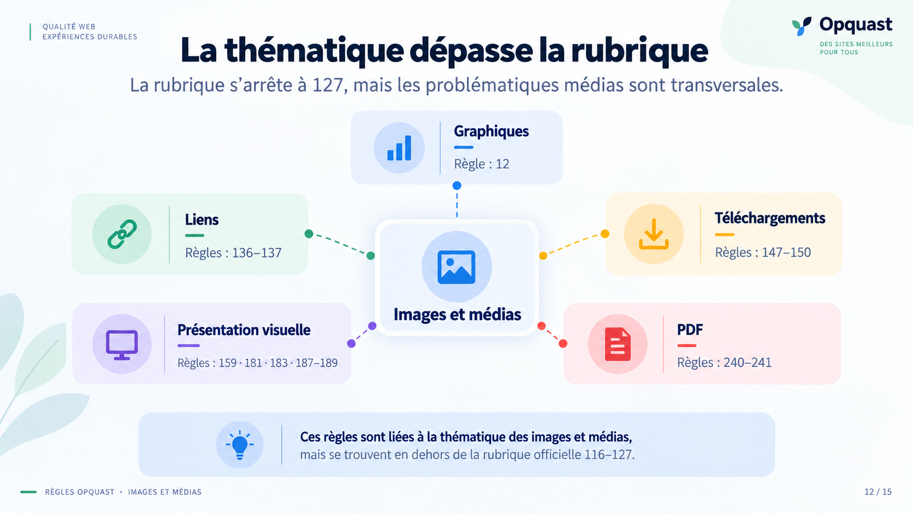
Lecture du visuel
« Images et médias » est placé au centre, relié à plusieurs familles : graphiques, liens, téléchargements, présentation visuelle, PDF.
Règles connexes
- 12
- 136-137
- 147-150
- 159
- 181, 183, 187-189
- 240-241
Idée directrice
La rubrique officielle s'arrête à la règle 127, mais les problématiques liées aux médias traversent d'autres parties du référentiel.
Message à retenir
Ne pas arrêter l'analyse à la frontière d'une rubrique.
La qualité ne suit pas toujours les frontières du référentiel.
Un graphique relève des images, mais aussi de ses données numériques. Un téléchargement pose d'autres questions. Un PDF ou un texte mis en image encore d'autres.
Le bon réflexe est donc de suivre le problème utilisateur, pas seulement le nom de la rubrique.
Impact utilisateur
Une lecture trop cloisonnée peut faire oublier des risques pourtant liés au même média.
Ce que garantit l'approche
Elle permet une analyse plus complète du parcours et du contenu réellement proposés.
Mémo
Suivre le problème, pas la rubrique.
Slide 13 - Cas pratiques
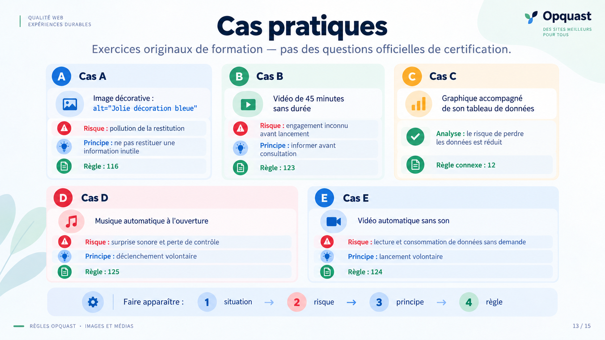
Lecture du visuel
Cinq situations concrètes sont proposées :
- image décorative avec un
altdescriptif ; - vidéo de 45 minutes sans durée ;
- graphique accompagné de son tableau de données ;
- musique automatique à l'ouverture ;
- vidéo automatique sans son.
Ces cas sont des exercices originaux de formation, et non des questions officielles de certification.
Idée directrice
Pour chaque cas, appliquer la même méthode : identifier le préjudice, la garantie recherchée, puis la règle pertinente.
Message à retenir
Partir du cas concret avant de chercher le numéro de règle.
Ne cherchez pas immédiatement le numéro.
Une image décorative trop décrite parasite la restitution. Une vidéo de 45 minutes sans durée empêche de décider en connaissance de cause. Un graphique accompagné de ses données permet de retrouver l'information. Un son automatique surprend. Et une vidéo automatique reste automatique, même si elle démarre sans son.
Impact utilisateur
Dans chaque cas, demandez : qu'est-ce que l'utilisateur gagne ou perd concrètement ?
Ce que garantissent les règles
- décoratif : ne pas parasiter ;
- durée : permettre de choisir ;
- graphique : donner accès aux données ;
- son : ne pas surprendre ;
- vidéo : laisser l'utilisateur déclencher.
Mémo
D'abord le préjudice, ensuite le numéro.
Slide 14 - Les 12 règles en trois questions
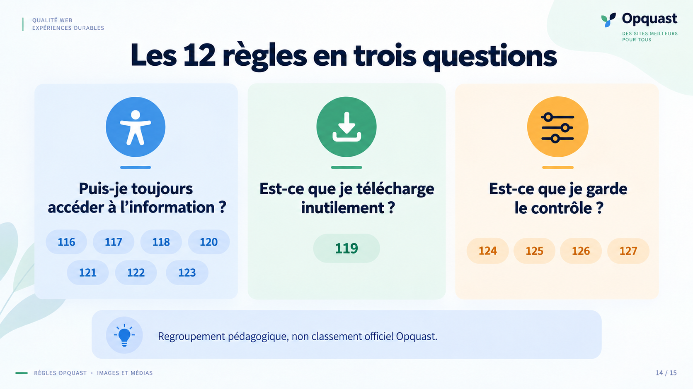
Lecture du visuel
Les douze règles sont regroupées pédagogiquement autour de trois questions.
Accès à l'information
116, 117, 118, 120, 121, 122, 123
Sobriété des ressources
119
Contrôle utilisateur
124, 125, 126, 127
Ce regroupement est pédagogique et ne constitue pas un classement officiel Opquast.
Idée directrice
Les douze règles deviennent plus faciles à retenir lorsqu'on les relie à trois grands besoins utilisateur.
Message à retenir
Accéder, économiser, garder la main.
Pour retenir les douze règles, posez trois questions.
Est-ce que l'utilisateur accède à l'information ? Est-ce qu'on lui fait télécharger uniquement ce qui est nécessaire ? Est-ce qu'il garde la main sur le média ?
Les numéros viennent ensuite.
Impact utilisateur
Sans ces règles, l'utilisateur peut perdre l'information, gaspiller des ressources ou perdre le contrôle.
Ce que garantissent les règles
Elles garantissent trois principes : accès, sobriété, contrôle.
Mémo
Je peux accéder ? Je télécharge juste ? Je garde la main ?
Slide 15 - Le média doit rester au service de l’utilisateur
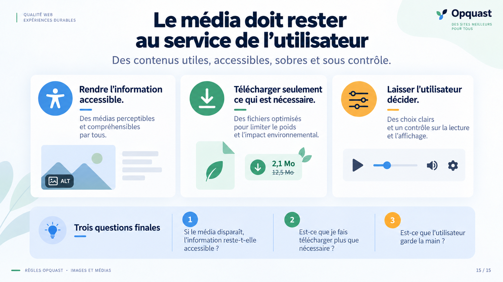
Lecture du visuel
Trois principes concluent la présentation :
- rendre l'information accessible ;
- télécharger seulement ce qui est nécessaire ;
- laisser l'utilisateur décider.
Idée directrice
Une image, une vidéo, un son ou une animation reste utile tant qu'il sert l'utilisateur au lieu de lui imposer des contraintes.
Message à retenir
Le média doit rester au service de l'utilisateur.
Si vous ne retenez qu'une chose, retenez celle-ci : le problème n'est pas le média. Le problème apparaît lorsqu'il fait perdre une information, gaspille des ressources ou décide à la place de l'utilisateur.
C'est cette logique qui permet de retrouver les règles, même lorsqu'on a oublié leur numéro.
Impact utilisateur
Information perdue, ressources gaspillées, contrôle retiré.
Ce que garantissent les règles
Information accessible, ressources adaptées, utilisateur maître de sa consultation.
Mémo
Ne rien perdre. Ne rien charger pour rien. Ne rien imposer.